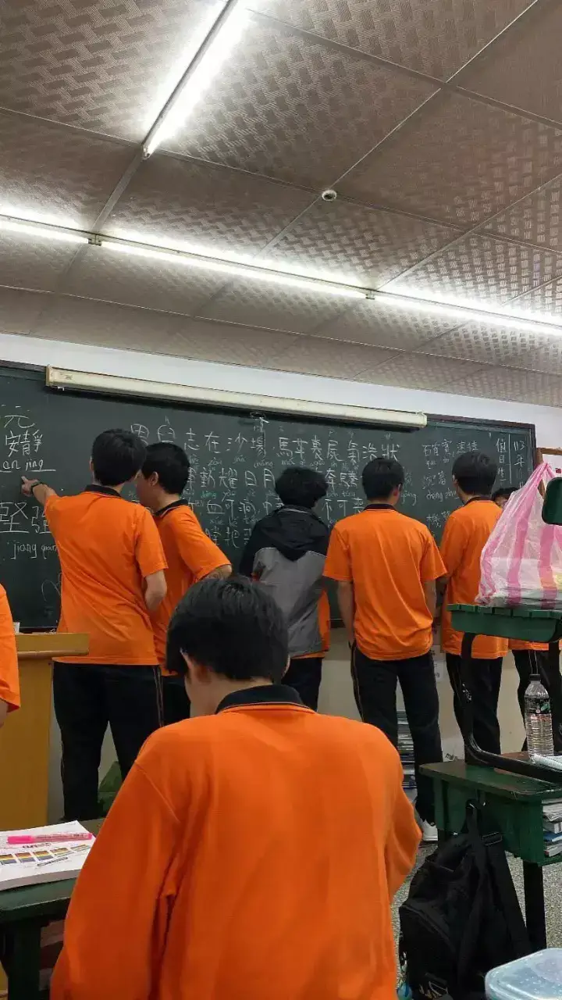
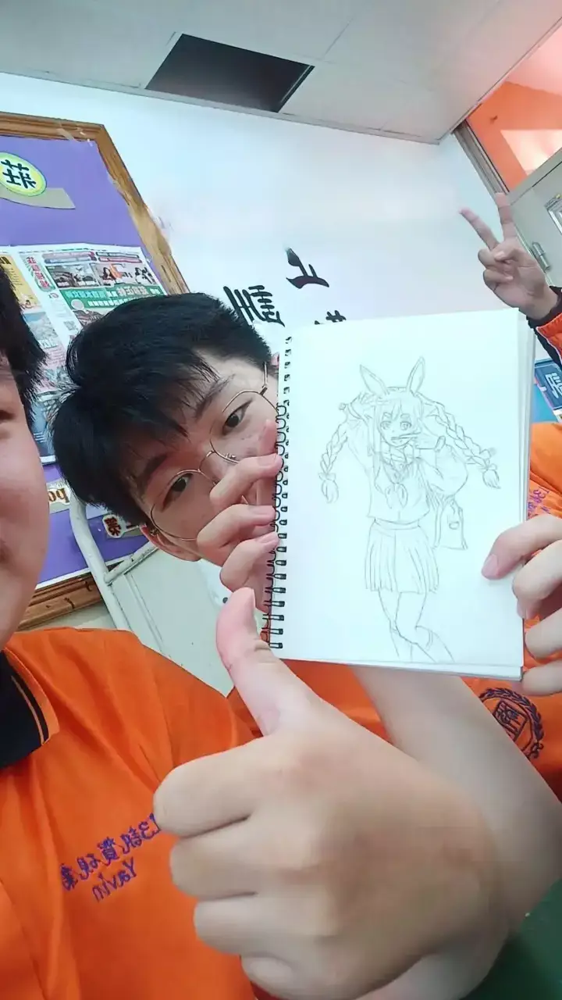
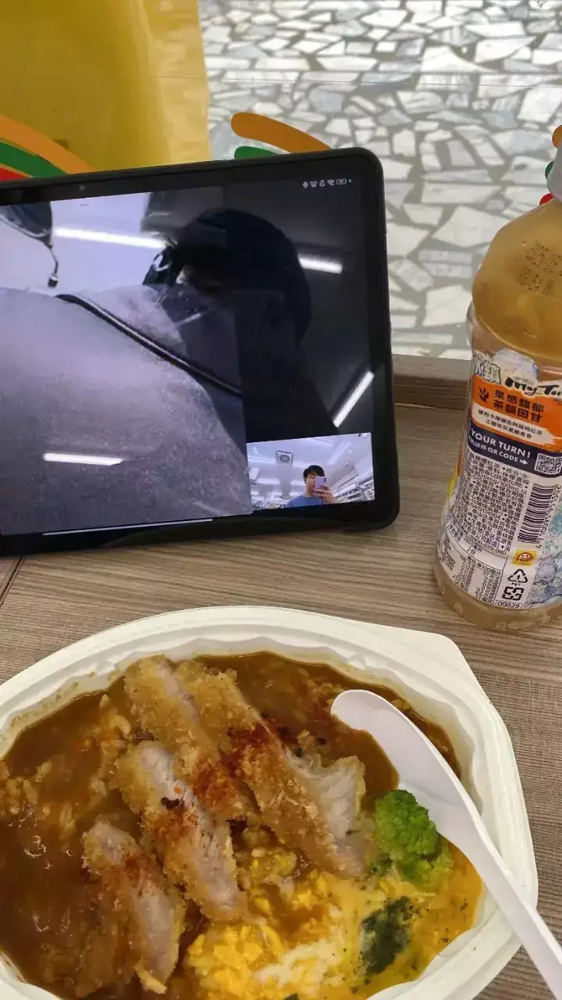
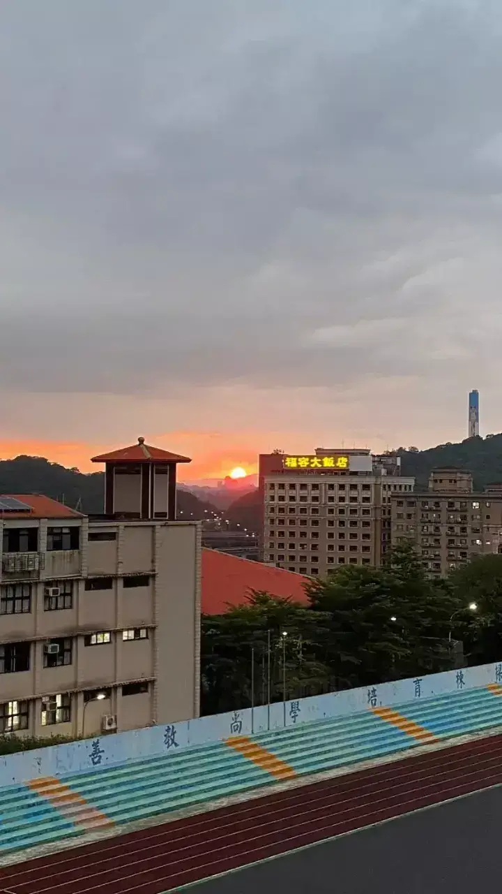

PERSONAL · TAIWAN
School in Taiwan.
A few snapshots from my school days in Taiwan: classmates, creative moments, and the little things in between.

School in Taiwan gave me plenty of everyday moments to remember. From time with classmates in the classroom to sharing drawings, meals, and the view at the end of the day, these are a few snapshots I wanted to keep.
Everyday school memories
Some of my favorite memories are the simple ones: being around classmates, sharing what we are making, and enjoying a meal after a busy day. Even an ordinary sunset near school can make the day feel special.
— Yavin
More school memories



